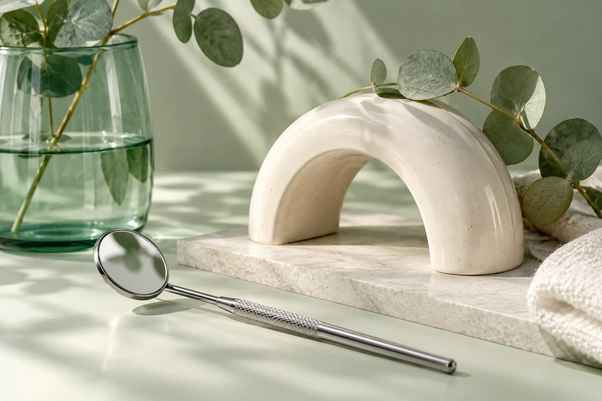

Atendimento odontológico
Categoria indicada no perfil. Pergunte se a necessidade que você apresenta faz parte da atuação.
CATEGORIA DO PERFILOdontologia · Contagem
A ficha identifica Ivone Barbosa como dentista. Ligue para confirmar quais serviços estão disponíveis, horários e informações para sua consulta.

03 · SOBRE O PROFISSIONAL
Dentista Ivone Barbosa · Riacho das Pedras, Contagem. A descrição comercial não estava disponível na ficha pública consultada.
O perfil público identifica Dentista Ivone Barbosa no bairro Riacho das Pedras, em Contagem. A ficha não apresenta biografia comercial nem discrimina procedimentos; confirme o escopo de atendimento diretamente com a profissional.
O Google mostra 5,0 estrelas em 181 avaliações. Atendimento (12), segurança (6) e competência (6) aparecem entre os temas agregados.
04 · SERVIÇOS OFERECIDOS
A ficha confirma a categoria de dentista, sem listar tratamentos. Use os tópicos para confirmar o serviço e a indicação.
Categoria indicada no perfil. Pergunte se a necessidade que você apresenta faz parte da atuação.
CATEGORIA DO PERFILConfirme como é feita a avaliação e se é preciso levar exames ou informações anteriores.
CONFIRMARA ficha não discrimina procedimentos ou preços. Solicite os detalhes antes de marcar.
CONVERSARO perfil recomenda agendamento e informa banheiro, cartões e NFC. Confirme opções atuais.
INFORMADO NO PERFIL05 · DIFERENCIAIS
Dados de avaliação e atributos exibidos no Google Maps em 1º de outubro de 2026.
Nota 5,0/5 em 181 avaliações no perfil consultado.
Atendimento, segurança e competência aparecem entre temas agregados, sem depoimentos reproduzidos.
A ficha recomenda agendamento e indica pagamento por cartão/NFC. Confirme agenda e condições.
06 · COMO FUNCIONA
Sugestão informativa; confirme o processo real com o profissional.
Descreva de forma breve o que procura e confirme se a dentista atende essa necessidade.
Pergunte sobre horário, valores, endereço e necessidade de levar documentos ou exames.
Procedimentos e indicações devem ser discutidos após avaliação odontológica individual.
07 · REGIÃO DE ATENDIMENTO
Endereço conforme ficha pública do Google Maps. Confirme local e condições de atendimento antes de se deslocar.
R. Rio Juruá, 601 - Riacho das Pedras, Contagem - MG, 32280-100, BrasilAbrir ficha no Google Maps ↗08 · FAQ
A ficha não lista tratamentos. Ligue para confirmar quais serviços e avaliações estão disponíveis.
Sim. O Google indica que é recomendado; confirme horário e orientações pelo telefone.
A ficha informa cartões e NFC. Confirme opções e condições atuais.
A ficha pública aponta o bairro Riacho das Pedras, em Contagem. Confirme endereço e rota no mapa.
09 · CTA / CONTATO
Ligue para confirmar serviços, valores, agenda e endereço da Dentista Ivone Barbosa antes de marcar.